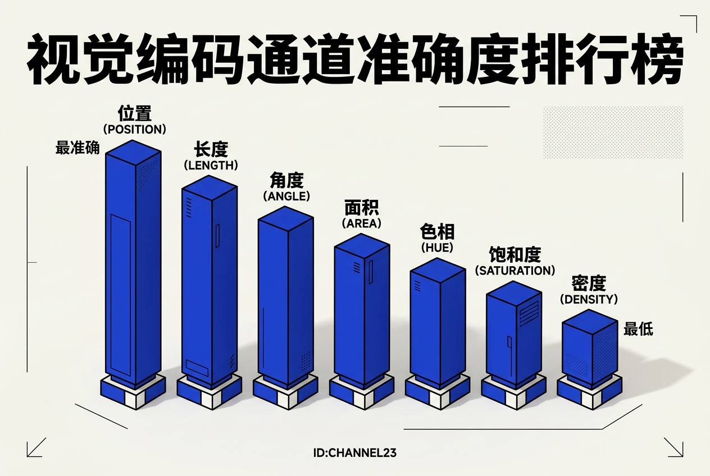
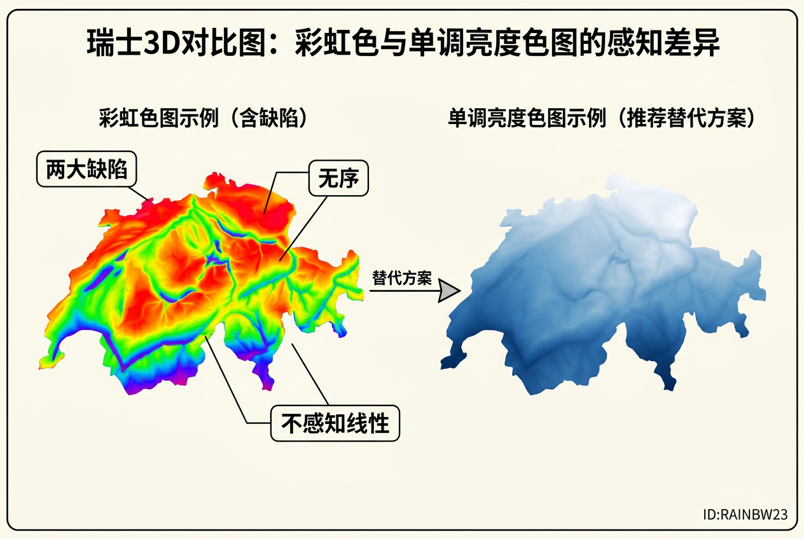
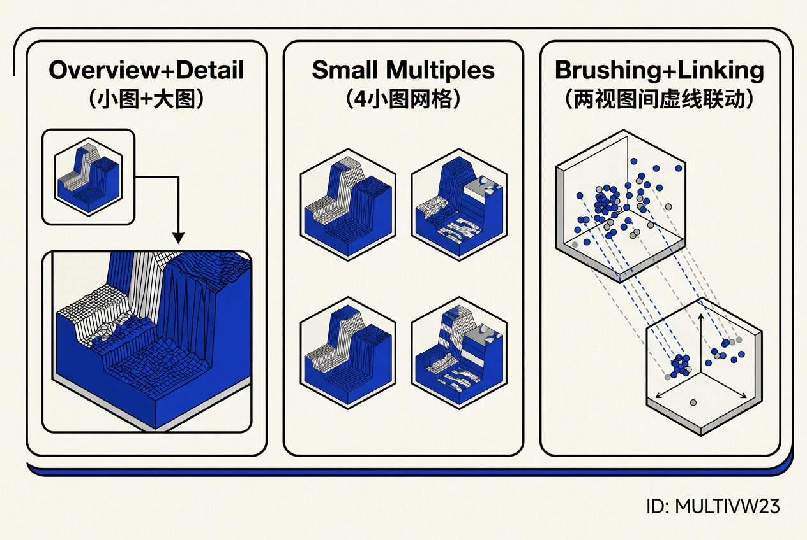
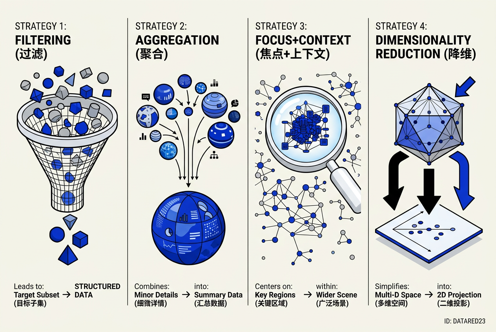
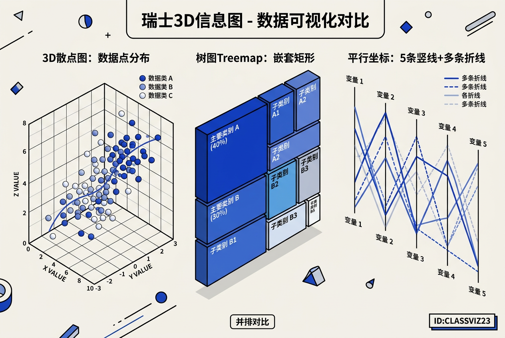

第23章：可视化 — 零基础极详细讲义
讲义说明
本讲义基于 Steve Marschner & Peter Shirley 所著《虎书5》第5版第23章 Visualization（p.645-679），由10年游戏引擎/渲染研发经验工程师执笔。
本章关键词：科学可视化、信息可视化、标量场/向量场、等值面、流线、体绘制、传递函数、D3.js、Tableau、ParaView。
学完本章，你会理解：为什么要用"图"代替"表"、人类视觉系统怎么帮你"看出"模式、等值面/流线/LIC怎么把抽象数据变可见。
本版插画采用 Guizang 材质插画风格重新绘制。
0. 为什么要用"图"代替"表"？
一句话本质：人脑的工作记忆只有4±1个chunk。可视化就是把100万个数据点"卸载"到视网膜上，用pre-attentive vision在0.2秒内看完。
想象你去超市买50样东西。如果你只带一张文字清单（=数据表格），你得逐行阅读、记忆、来回对照——工作记忆很快就崩溃了。但如果你的清单是一个"超市平面图"，每个商品的位置都标在图上（=可视化），你一眼就能看到"牛奶在东北角、面包在西南角"——这就是"外部存储"的力量。
| 维度 | 文字/数字 | 可视化 |
|---|---|---|
| 短期记忆负荷 | 高（要记住所有项） | 低（外部存储在图上） |
| 处理模式 | 串行（逐项读） | 平行（一次扫视） |
| 适合的数据量 | 几十 | 几百~几百万 |
| 适合的任务 | 精确数值查找 | 模式发现、异常检测 |
23.1 背景（Background）
23.1.1 为什么需要关注"可视化"？
我们生活在大数据时代——每秒产生海量数据，但人类的大脑仍然是"石器时代"的配置。可视化就是在人类认知能力和数据量之间架桥。
23.1.2 三类资源限制
想象你做季度汇报PPT。你面临三个限制：电脑性能差（计算资源=加载大图会卡）、老板只有5分钟注意力（人类感知=不能讲太复杂）、投影仪分辨率低（显示资源=放不下100个小图）。可视化的设计就是同时平衡这三个约束。
| 限制类型 | 关键问题 | 应对策略 | 游戏引擎类比 |
|---|---|---|---|
| 计算 | 实时要求 <1s响应 | LOD、空间分割、GPU并行 | 16ms帧预算 |
| 人类 | 4±1 chunk、change blindness | external memory、pre-attentive | HUD必须pre-attentive |
| 显示 | "像素用完"、信息密度vs杂 | overview+detail、aggregation | 4K屏每帧8M像素 |
23.2 数据类型（Data Types）
23.2.1 为什么数据类型"几乎决定一切"？
可视化设计的第一原则：数据类型决定图表类型。给表格数据画树图，给图数据画柱状图——都是灾难。
数据 可视化抽象 典型图
─────────────────────────────────────────────────────
表格 (table) items × dimensions scatter / bar / line
关系 (graph/tree) nodes + links node-link / treemap
空间 (field) 2D/3D场值 isosurface / streamlines / DVR23.2.2 三类维度的本质区别
| 类型 | 例子 | 可以做算术？ | 可以排序？ | 可以区分？ | 可视化策略 |
|---|---|---|---|---|---|
| 定量（quantitative） | 年龄、身高、温度 | ✅ 加减乘除 | ✅ | ✅ | 用position/length/angle |
| 有序（ordered） | 衬衫尺码S/M/L、评分1-5 | ❌ 不能做加减 | ✅ | ✅ | 用lightness/saturation |
| 分类（categorical） | 水果、国家、名字 | ❌ | ❌ | ✅ | 用hue/texture/shape |
因为hue没有隐含排序！我们的大脑不会觉得"红色比蓝色大"——红色和蓝色只是"不同"，不是"谁大谁小"。要让数据看起来有大小关系，要用lightness（明度）——暗→亮天然对应小→大。
23.3 以人为中心的设计过程（Human-Centered Design）
23.3.1 四层嵌套验证
┌─────────────────────────────────────────────────┐
│ ① Domain problem characterization │ ← 问题真的需要可视化？
│ ┌─────────────────────────────────────────┐ │
│ │ ② Data/operation abstraction design │ │ ← 抽象成什么operations？
│ │ ┌─────────────────────────────────┐ │ │
│ │ │ ③ Encoding/interaction design │ │ │ ← 选什么视觉通道？
│ │ │ ┌─────────────────────────┐ │ │ │
│ │ │ │ ④ Algorithm design │ │ │ │ ← 怎么算得快？
│ │ │ │ │ │ │ │
│ │ │ └─────────────────────────┘ │ │ │
│ │ └─────────────────────────────────┘ │ │
│ └─────────────────────────────────────────┘ │
└─────────────────────────────────────────────────┘第①层是"你要装修什么房子"（Domain——别墅还是公寓）；第②层是"你要哪些房间"（Abstraction——卧室/厨房/书房）；第③层是"每个房间怎么装修"（Encoding——墙色、地板、灯光）；第④层是"具体怎么施工"（Algorithm——水电/泥工/木工顺序）。你不能跳过前两层直接选墙色——否则厨房可能被装成卧室。
| 层 | 核心问题 | 验证方法 | 常见错误 |
|---|---|---|---|
| ① Domain | 用户真正需要解决什么问题？ | 实地观察、interview、原型测试 | 没问用户直接做 |
| ② Abstraction | 数据应该抽象成什么操作？ | 现场研究、task成功率 | 抽象层次不对 |
| ③ Encoding | 用什么视觉通道编码？ | 心理物理实验、error rate | 用hue表示定量 |
| ④ Algorithm | 怎么算得足够快？ | 复杂度分析、benchmark | 过度优化 |
23.4 视觉编码原则（Visual Encoding Principles）
23.4.1 核心框架：mark × channel
可视化 = 选mark（图形元素）× 选channel（视觉属性）。
| mark类型 | 维度 | 例子 |
|---|---|---|
| 点（point） | 0D | 散点图中每个数据点 |
| 线（line） | 1D | 折线图中的线条 |
| 区域（area） | 2D | 柱状图、热力图 |
| 体积（volume） | 3D | 体绘制中的体素 |
23.4.2 通道排行榜（必背！）

定量数据准确度从高到低（Cleveland & McGill, 1985）：
这个排行榜为什么重要？因为它告诉你：能用柱状图（length）就别用气泡图（area），能用折线图（position+slope）就别用颜色编码。
| 数据类型 | 最佳通道 | 次佳 | 绝对不要用 |
|---|---|---|---|
| 定量（FPS、内存、温度） | position（坐标轴） | length（柱状图） | hue（你分不清数值） |
| 有序（等级、严重程度） | lightness（明度） | saturation（饱和度） | hue（无排列含义） |
| 分类（地区、部门、类型） | position + hue | texture（纹理） | size（会误导为定量） |
23.4.3 颜色（Color）——最容易用错
HSL三分量
| 分量 | 含义 | 适合 | 不适合 |
|---|---|---|---|
| Hue（色相） | 红/绿/蓝/紫 | 分类数据（最多6-12种） | 定量/有序数据 |
| Saturation（饱和度） | 鲜艳vs灰暗 | 有序数据（次选） | 大区域（太艳刺眼） |
| Lightness（明度） | 亮vs暗 | 有序数据（最佳） | 小区域（看不清） |
彩虹色图的两大缺陷

| 缺陷 | 表现 | 后果 |
|---|---|---|
| ① 用hue表示顺序 | 红→橙→黄→绿的顺序是人为的，不是天生的 | 用户无法凭直觉判断"哪个值更大" |
| ② 不是perceptually linear | 等宽的数据区间，在彩虹色图上的视觉宽度不一样 | 用户对数据差距的感知被严重扭曲 |
因为彩虹色图会误导用户！假如一个温度图用彩虹色，-2000°C到-1000°C看起来和-1000°C到0°C"宽度"不同——即使实际温度差都是1000°C。现代引擎改用monotonic lightness ramp（单调亮度渐变），让等数据间隔在视觉上也是等间隔。
替代方案：ColorBrewer
- 推荐工具：colorbrewer2.org
- 顺序数据 → "sequential"色板（单色渐变）
- 分类数据 → "qualitative"色板（不同色相）
- 发散数据 → "diverging"色板（两种颜色从中间向两端渐变）
- 色盲友好 → 用ColorBrewer的colorblind-safe选项（约10%男性色盲）
23.4.4 2D vs 3D空间布局
| 场景 | 推荐 | 原因 |
|---|---|---|
| 抽象数据（销量、性能、统计） | 2D | 避免Occlusion、透视扭曲、文字难读 |
| 真实3D数据（CT、流体、地理） | 3D | 物理结构本身就是3D |
23.5 交互原则（Interaction Principles）
23.5.1 经典三句箴言
Shneiderman, 1996："Overview first, zoom and filter, details on demand."
你走进博物馆，先在门口看地图（Overview - 全貌），然后走向感兴趣的展厅（Zoom - 聚焦），在展厅里只看某个时期的展品（Filter - 过滤），最后凑近看某件文物的介绍牌（Details on demand - 细节按需）——这就是完美的交互流程。
1. Overview → 看全貌，找兴趣点
2. Zoom & Filter → 缩到感兴趣区域 / 过滤掉噪声
3. Details on Demand → 鼠标悬停/单击看精确值23.5.2 交互的成本
关键洞察：交互需要人的时间——如果用户必须"穷举"才能找到答案，可视化就退化成手工人肉搜索。解决方法是让系统自动检测值得看的特征，主动推到用户面前。但完全自动 = 不需要可视化 = 退回算法问题。平衡点：自动 + 人在loop里。
23.5.3 动画（Animation）
| 方式 | 优点 | 缺点 | 适合 |
|---|---|---|---|
| 全程动画 | 容易追踪变化过程 | 帧数多了记忆负担大 | 展示趋势变化 |
| 翻页（2帧flip） | 简单、易比较 | 丢失中间过程 | 前后对比 |
| 静态并排 | 最易精确比较 | 占空间 | 比较5个版本 |
23.6 复合视图与多视图（Composite and Adjacent Views）

| 布局 | 原理 | 适合 | 例子 |
|---|---|---|---|
| Single Drawing | 所有数据一张图 | 数据量小、维度少 | 柱状图、折线图 |
| Overview + Detail | 缩略图+细节图联动 | 大数据、需要定位 | 地图（全景+缩放） |
| Small Multiples | 多张相同编码的小图 | 按维度分面 | 按年份的销售趋势图 |
| Brushing + Linking | 多视图共享选中状态 | 多维探索 | 选中一个点→所有视图高亮 |
| Glyph | 复杂标记 | 多维数据点 | Chernoff人脸图 |
因为人类对面孔特征是非线性感知的！我们天生对"眉毛角度"极度敏感（因为它表示情绪），但对"鼻子大小"不太敏感。你在数据中编码了同样的信息量，但用户的感知会被眉毛角度主导——数据中的微小变化被放大，而鼻子大小的巨变被忽视。这就是"通道的可分离性"问题。
23.7 数据归约（Data Reduction）
23.7.1 核心问题：数据太大，画不下

| 策略 | 本质 | 适用场景 | 代价 |
|---|---|---|---|
| 过滤（Filter） | 只画满足条件的子集 | 用户有明确查询 | 可能漏掉重要模式 |
| 聚合（Aggregate） | N个item合并为1个mark | 大量同类数据 | 丢失个体差异 |
| Focus+Context | 局部细节+全局上下文 | 需要同时看整体和局部 | 实现复杂 |
| 降维（Dim Reduction） | 从N维压到2-3维 | 维度爆炸 | 细粒度结构丢失 |
23.7.2 Focus + Context 经典方法
| 方法 | 原理 | 例子 |
|---|---|---|
| Fish-eye Lens | 单径向透镜 | 地图上的放大镜效果 |
| Stretch & Squish | 拉伸局部、压缩其余 | TreeJuxtaposer |
| SpaceTree | 隐藏非路径节点 | 树形结构聚焦 |
23.7.3 降维方法对比
| 方法 | 原理 | 适合 | 局限性 |
|---|---|---|---|
| PCA | 保留最大方差方向 | 线性结构的数据 | 无法捕捉非线性结构 |
| MDS | 保留点之间的距离 | 相似度数据 | 计算量大 |
| t-SNE | 保留局部邻域结构 | 高维聚类可视化 | 全局结构可能失真 |
| UMAP | 比t-SNE更快 | 大规模高维数据 | 相对新，参数敏感 |
23.8 实例与应用（Examples）

23.8.1 表格数据 — Parallel Coordinates（平行坐标）
为什么需要平行坐标？当数据有5-20个维度时，普通的散点图无法展示。平行坐标用多根平行轴，每个数据点是一条穿过所有轴的折线。
| 维度数 | 适合的图 | 例子 |
|---|---|---|
| 1D | 直方图 | 年龄分布 |
| 2D | 散点图 | 身高vs体重 |
| 3D | 3D散点图+颜色 | 身高vs体重vs年龄 |
| 4-20D | 平行坐标 | 汽车数据（排量/油耗/价格/重量/马力） |
| 20D+ | 降维（PCA/t-SNE） | 基因表达数据 |
23.8.2 图数据 — Node-Link vs Matrix
| 任务 | 适合 | 理由 |
|---|---|---|
| 看拓扑结构、聚类 | Matrix视图 | 无edge crossing，聚类一目了然 |
| 看路径、局部邻域 | Node-Link | 路径追踪直观 |
| 看层次结构 | Treemap / 树状图 | 包含关系比连接关系更高效 |
23.8.3 空间场数据 — 科学可视化
| 场类型 | 可视化方法 | 游戏引擎类比 |
|---|---|---|
| 标量场（温度、密度、CT值） | 等值面（Isosurface）、直接体绘制（DVR） | 体积云、Fog |
| 向量场（速度、风力、磁场） | 箭头、流线（Streamlines）、LIC | 粒子系统、风场 |
| 张量场（扩散MRI、应力） | 极难——通常用glyph/颜色编码 | 有限元分析 |
全章总结
| 主题 | 一句话 |
|---|---|
| 数据决定图 | 表格/图/场 → 完全不同可视化范式 |
| 人决定图 | 4±1 chunk、pre-attentive 0.2s |
| 通道决定图 | position最准，hue最花 |
| 交互决定图 | Overview → Zoom → Filter → Details |
| 归约决定图 | Aggregate / Filter / Focus+Context / DimReduction |
Unreal Insights的火焰图（Flame Graph）= Focus+Context + Aggregation；RenderDoc的帧调试器 = Overview+Detail；UE的World Outliner = 树状图（Treemap的变体）。本章的所有原理你都"无意识"地在用——现在你知道为什么这些工具长得这样了。
10条工程师行动清单
- 永远先问"是什么数据类型"（table/graph/field）再选图
- 定量数据用position/length，不要用hue
- 类别数据用hue + 冗余编码（texture/shape）
- 避免rainbow colormap——用ColorBrewer sequential ramp
- 2D优先于3D（除非数据本身就是3D）
- 多视图 + linked highlighting是处理高维数据最稳的方案
- 大数据先aggregate/filter/sample，再画
- Focus + Context是同时看细节和全局的最强模式
- 动画用2帧flip，不要用全程动画
- 每层设计都验证（domain/abstraction/encoding/algorithm）
工具生态地图
| 用途 | 工具 |
|---|---|
| 学术/医学 | VTK, ParaView, ITK, OsiriX |
| 商业BI | Tableau, Power BI, Looker |
| Web信息可视化 | D3.js, Observable, Vega-Lite, Plotly |
| 编程艺术 | Processing, p5.js |
| 引擎调试 | Unreal Insights, RenderDoc, PIX |
可视化就像一副眼镜——它不创造新的信息，只是帮你看清原本就在那里的东西。一副好眼镜让你看到树叶的纹理（=发现数据中的模式），一副坏眼镜让你头晕目眩（=糟糕的可视化设计）。好的可视化设计就像好的眼镜：你不会注意到它的存在，但你的世界突然变得清晰了。
"可视化"不是"画图"，而是"把人类视觉系统当成高带宽外存来用"。
引擎里的profiler、HUD、telemetry dashboard跟医学CT、Tableau仪表盘是同源问题。掌握这一章的设计原理，你的debug工具、UI、HUD都会上升一个档次。
讲义完成。第23章覆盖了从数据分析到视觉编码再到交互设计的完整可视化体系——这是你的"数据思维"必修课。